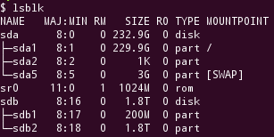

- using the
lsblk program
In the typical output of this program:

... it is easy to see which devices are mounted (i.e. don't have a MOUNTPOINT value. E.g. in the example above that's the device sdb.
- using
sudo fdisk -l
This option shows all disks but does not show which ones are not mounted (but that may be guessed):
$ sudo fdisk -l
Disk /dev/sda: 250.1 GB, 250059350016 bytes
255 heads, 63 sectors/track, 30401 cylinders, total 488397168 sectors
Units = sectors of 1 * 512 = 512 bytes
Sector size (logical/physical): 512 bytes / 512 bytes
I/O size (minimum/optimal): 512 bytes / 512 bytes
Disk identifier: 0x0007fe8d
Device Boot Start End Blocks Id System
/dev/sda1 * 2048 482142207 241070080 83 Linux
/dev/sda2 482144254 488396799 3126273 5 Extended
/dev/sda5 482144256 488396799 3126272 82 Linux swap / Solaris
WARNING: GPT (GUID Partition Table) detected on '/dev/sdb'! The util fdisk doesn't support GPT. Use GNU Parted.
Disk /dev/sdb: 2000.4 GB, 2000365289472 bytes
255 heads, 63 sectors/track, 243197 cylinders, total 3906963456 sectors
Units = sectors of 1 * 512 = 512 bytes
Sector size (logical/physical): 512 bytes / 512 bytes
I/O size (minimum/optimal): 512 bytes / 512 bytes
Disk identifier: 0xa29ef612
Device Boot Start End Blocks Id System
/dev/sdb1 1 3906963455 1953481727+ ee GPT
- if the disk is labelled, lists disks by label
$ ls /dev/disk/by-label/
total 0
drwxr-xr-x 2 root root 60 Nov 16 10:34 ./
drwxr-xr-x 6 root root 120 Nov 16 10:34 ../
lrwxrwxrwx 1 root root 9 Nov 16 10:34 transc-usb-disk -> ../../sdb